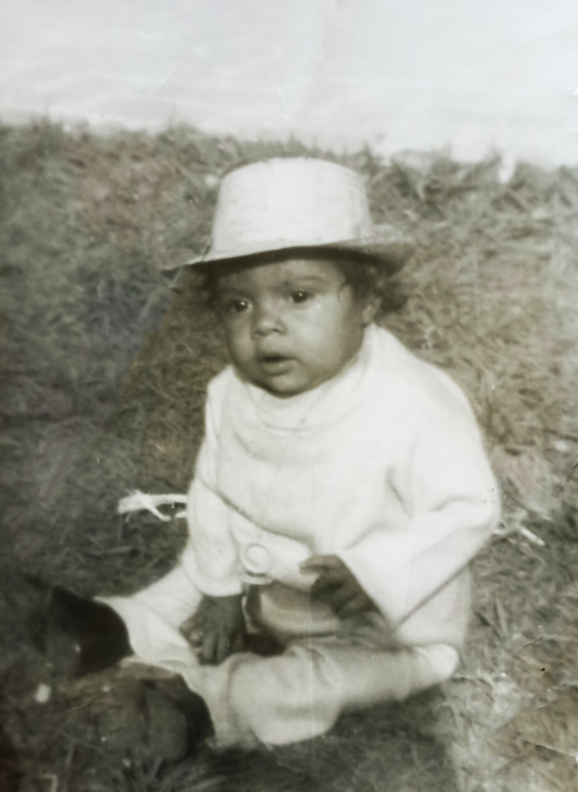
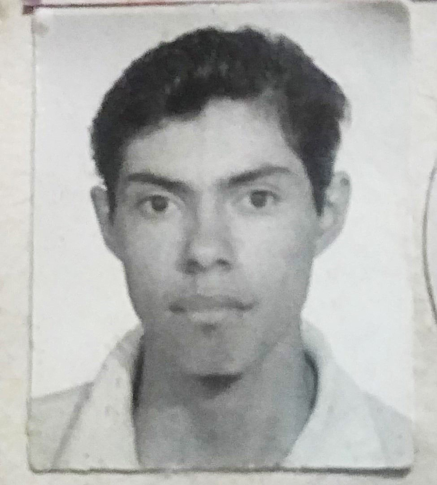

MURO DE FOTOS




He aquí mi hermano Jorge y su historia

Jorge y yo pasamos por todas las facetas, alegrías, tristezas, preocupaciones y penas. Mi hermano es tres años mayor que yo, por lo que en los primeros años de escuela estabamos en salones distintos, pero como no se le daba muy bien el estudio, lo vine alcanzando en tercero de primaria. A partir de ahí estuvimos juntos hasta la preparatoria, aunque tiempo después dejó la escuela para ponerse a trabajar.
Él cuando era niño pasó por una etapa de enfermedad que lo llevó al quirófano varias veces, me dolía verlo sufrir por las heridas de las operaciones, pero él es un guerrero, no se doblegó y salió adelante. Él ha sido una inspiración para mí como persona, su ejemplo me sirvió para ser una persona responsable, siempre trabajando y nunca se metía en problemas.
Recuerdo que de niño era muy atrevido, trepándo más alto que cualquiera, metiéndose donde nadie más se animaba, nos dió varios sustos. Hay dos momentos que siempre recuerdo, el primero fue cuando en una de tantas veces que nos ibamos al arroyo en la colonia vicente guerrero ("el ejido) estabamos cruzando ya de regreso a la casa cuando una señora nos gritaba que nos salieramos rápido porque habían abierto las compuertas de la presa, hoy en día me pregunto ¿cómo supo la señora lo que estaba por pasar? tal vez era un ángel que había sido enviado para alertarnos, no lo sé, pero vaya que fue muy a tiempo. El arroyo por donde pasábamos era lo más angosto, medía algo así como unos ocho metros de ancho y unos cinco de hondo, yo y mis otros primos y primas ya habíamos pasado para el otro lado pero una de mis primas y jorge todavía no, de repente se escuchó un sonido muy fuerte, el arroyo comenzó a inundarse de agua con una fuerza que arrastraba todo a su paso, ví como llevaba troncos de árboles grandes, animales muertos, ahora el ancho del arroyo era el doble, fueron muchos los minutos que estuvimos viendo eso, nunca bajó el nivel, ya estábamos asustados por que jorge y mi prima no podían cruzar con nosotros y se estaba haciendo de noche. Caminamos por la orilla cada quíen por su lado para buscar por donde cruzar, pero llegó un momento donde nosotros ya no podíamos, y ellos siguieron, como a doscientos metros había un puente que estaba por encima del arroyo, caminaron hasta allá y se nos perdieron de vista, pasó como media hora sin saber de ellos, hasta que por fin los alcanzamos a ver por encima de un barranco, una de las calles en donde terminaba la colonia la gente tiraba la basura al arroyo, se había formado una especie de resbaladilla, fácil tenía como 20 metros de alto. Por ahí venían caminando, más bien trepando, agarrándose de donde podían, fue un gran susto ese día pero afortunadamente regresamos a casa con bien.
En otra ocasión, en una de tantas aventuras que teníamos, nos fuimos de vagos rumbo a la presa más cercana que es hoy el parque del cedazo. Nos habían dicho que por ahí había unas cuevas de "Juan Chávez", asi que como todos los niños curiosos, allá vamos. Duramos un tiempo persiguiendo liebres, en una de esas veces que perseguíamos una, sin querer dimos con una de las entradas a la cueva, recuerdo que la entrada tenía forma se puerta con la parte de arriba redonda, pero lo suficiente alta para que nosotros entráramos de pie. Con miedo y curiosidad nos adentramos en la cueva, no traíamos lámpara ni cerillos para alumbrar, no podía ver nada, caminabamos agarrados de las manos. De repente me pegué en la cabeza con algo, me solté de quien me tenía agarrado, y entré en pánico, yo sólo gritaba que me esperaran, que no me dejaran atrás, con una mano tocaba el techo, con la otra de lado a lado para buscar el camino. Cuando por fin encontré la salida ya me estaban esperando jorge y los amigos, del susto pasamos a las risas. Seguimos caminando, más adelante nos encontramos con otra entrada, pero ésta era más pequeña y estaba en el suelo, era cuadrada como la forma que tienen las tumbas. Los amigos nos retaron a entrar, yo dije que no, pero mi hermano no se rajaba tan facilmente, él brincó y se asomó, era una abertura tan pequeña que sólo se podía entrar acostado, ¿y creerán que se animó?, por supuesto, así era él, ¿cuál miedo?, entró arrastrándose hasta perderse, pensábamos que de un momento a otro regresaría y terminaríamos riéndonos otra vez. Pero no regresó, pasaron alrededor de dos horas y nosotros ya estabamos asustados porque no salía. Uno de mis amigos dijo que le habían dicho que adelante tenía que estar la salida, así que comenzamos a caminar para buscarla, fue otra media hora sin encontrarla, yo sólo pensaba en la tunda que nos iban a dar en la casa por andar haciendo eso, ¿y si no podía salir?, ¿si hubo un derrumbe y quedó atrapado?, sólo de pensarlo me dió terror, en medio de mis pensamientos de repente vimos una figura a lo lejos, era él, mi hermano, venía con una sonrisa como pensando: ¿no que no?. Fue un alivio verlo bien, todo aterrado, pero sin lesiones. Jamás se nos quitó lo aventados, seguimos con las aventuras, no tan arriesgadas como estas que les cuento pero si divertidas. Y son tantas que no podría contarlas todas. Jorge no tuvo hijos propios, pero ha tratado como si lo fueran a los hijos de su actual pareja Irma.
